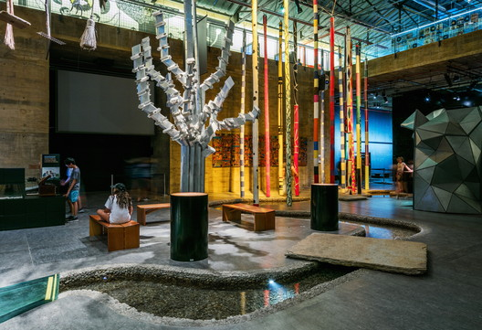

.jpg)
Bem-Vindo a RecifeTour

Sobre o Marco Zero:
O Marco Zero é uma praça ampla cercada de um lado por prédios históricos do final do século 17 e do outro pelo Rio Capibaribe. No chão está pintada a emblemática "Rosa dos Ventos" e, no seu centro, uma peça em metal avisando que é ali que começa a contagem das distâncias entre Pernambuco e outras regiões do estado. Durante o carnaval, essa praça (chamada oficialmente de Rio Branco) se transforma em um grande palco cultural que reúne as maiores atrações da Folia de Momo. Nos demais meses do ano, o Marco Zero recebe muitos turistas que se impressionam com a vista do local: rio, mar, arquitetura holandesa, arte, gastronomia. Tudo fica ao redor da praça. Vale a pena sentar-se na praça com calma e apreciar o cenário. Confira a seguir algumas dicas do que fazer no local
Parque das Esculturas de Francisco Brennand

Com vista para o Marco Zero, o Parque de Esculturas de Francisco Brennand é acessível de barco a partir da praça ou de carro, por um bairro chamado Brasília Teimosa, que sedia a Praia do Pina.
Museu Cais do Sertão
Moderno e interativo, o Museu Cais do Sertão coloca lado a lado a vida simples do povo sertanejo com a tecnologia. O resultado é um primor! Toda a riqueza do Sertão Nordestino é revelada por meio de peças, fotografias, textos e música.